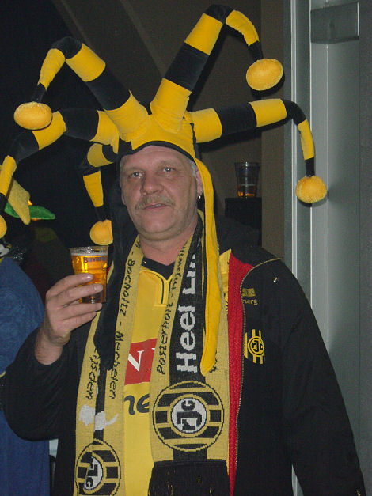

|
Roda JC - RKC (1-1) 11 november 2006
|
De wedstrijd wordt voorafgegaan door een optreden van de Kirchröädsjer Meëdsjer.
Een bonte verzameling vlaggen in het gastenvak.
Steeds meer vlaggen op west.
Roda lijkt gauw op voorsprong te komen, maar het laatste tikje door Oper maakt
het doelpunt buitenspel.
Het duidelijke veldoverwicht van Roda wordt in de 19e min. duidelijk gesteld
door
een enorme poeier van Ramzi die de bal vanaf twintig meter in de kruising jaagt.
Top-overleg tussen Ramzi, De Fauw en Agustien over een te nemen vrije trap.
Agustien lijkt hem te gaan nemen maar geeft slechts een tikje waarna Ramzi de
bal iets te zacht midden op doel schiet waar de keeper er gemakkelijk aan kan.
Prima kans voor Vandamme die de bal knullig naast lepelt.
De ongelukkige Oper naast oud-Rodaspeler Vicelich in het doel wachtend op een
van de vele corners voor Roda.

Terwijl Roda in de tweede helft steeds meer greep op de wedstrijd verliest
steekt
deze supporter vast een feestsigaartje op.
Iets te vroeg naar blijkt in de 58e min. wanneer Van den Bergh de gelijkmaker
scoort: 1-1.
Alweer lukt het Roda niet een voorsprong vast te houden. Er sluipt paniek in de
ploeg en het spel zakt naar een armetierig niveau.
Het slotoffensief van Roda levert niks op.

Ook deze vrije trap niet.
De teleurstelling in beeld.
Maar er was nog een troostprijs >>>
Enkele supporters van Charlton Athletic op bezoek.

Vanwege de opening van het carnavalseizoen liepen er enkele opmerkelijk
geklede figuren in de Kickoff.
Van de spelers kwamen onder meer Rudge en Senden.
© Koempels Pleasure Dome
|